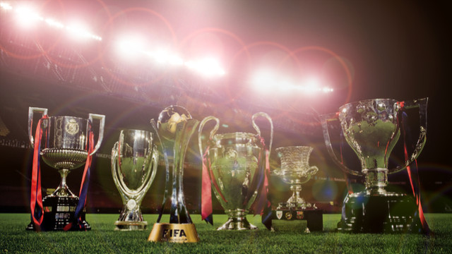

{kind=link}
Team Achievements
- Most points scored in a season for them totaled up to 100 points for the 12-13 season.
- The team's highest goal scorer is Lionel Messi with 459 goals in his career.
- Beat Real Madrid's record of most goals scored in a year. (180 goals: 2 more than RM)
- The past Barcelona team, which reached a record six consecutive Champions League semi-finals and won 14 trophies in just four years under Pep Guardiola, is considered by some in the sport to be the greatest team of all time
- FC Barcelona's all-time highest goalscorer in all competitions (including friendlies) is Lionel Messi with 459 goals.
- Messi is the all-time highest goalscorer for Barcelona in all official competitions, excluding friendlies, with 430 goals. He is also the record goalscorer for Barcelona in European (80 goals) and international club competitions (88 goals), and the record league scorer with 295 goals in La Liga.
- Four people have managed to score over 100 league goals at Barcelona: Lionel Messi (295), Cesar Rodriguez (192), Lazslo Kubala (131) and Samuel Eto'o (108).
Top Current Season Goal Scorers
- Luis Suarez - 26 Goals - 5 Braces / 2 Hattricks
- Lionel Messi - 18 Goals - 4 Braces / 1 Hattrick
- Neymar - 18 Goals - 3 Braces / 1 Quadruple
Trophies
(5)-UEFA Champions League: 1991-92, 2005-06,2008-09,2010-11,2014-2015
(3)-FIFA Club World Cup: 2009-10, 2011-12, 2015-16
(5)-European Super Cup: 1992-93, 1997-98, 2009-10, 2011-12, 2015-16
(23)-Spanish League Championship: 1928-29, 1944-45, 1947-48, 1948-49, 1951-52,
1952-53, 1958-59, 1959-60, 1973-74, 1984-85, 1990-91, 1991-92, 1992-93, 1993-94,
1997-98, 1998-99, 2004-05, 2005-06, 2008-09, 2009-10, 2010-11, 2012-13, 2014-15
(27)-Spanish Cup: 1909-10, 1911-12, 1912-13, 1919-20, 1921-22, 1924-25, 1925-26, 1927-28,
1941-42, 1950-51, 1951-52, 1952-53, 1956-57, 1958-59, 1962-63, 1967-68, 1970-71, 1977-78,
1980-81, 1982-83, 1987-88, 1989-90, 1996-97, 1997-98, 2008-09, 2011-12, 2014-15
(11)-Spanish Supercup: 1983-84, 1991-92, 1992-93, 1994-95, 1996-97, 2005-06, 2006-07, 2009-10,
2010-11, 2011-12, 2013-14
